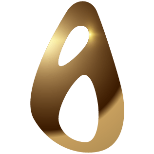

SISTEMA DE IDENTIDAD VISUAL
La identidad visual de IDERMA CAPILAR evoluciona continuamente.
Explora el sistema gráfico vigente o consulta el archivo histórico de la marca como referencia.
IDENTIDAD VISUAL actual
Archivo Histórico de Marca